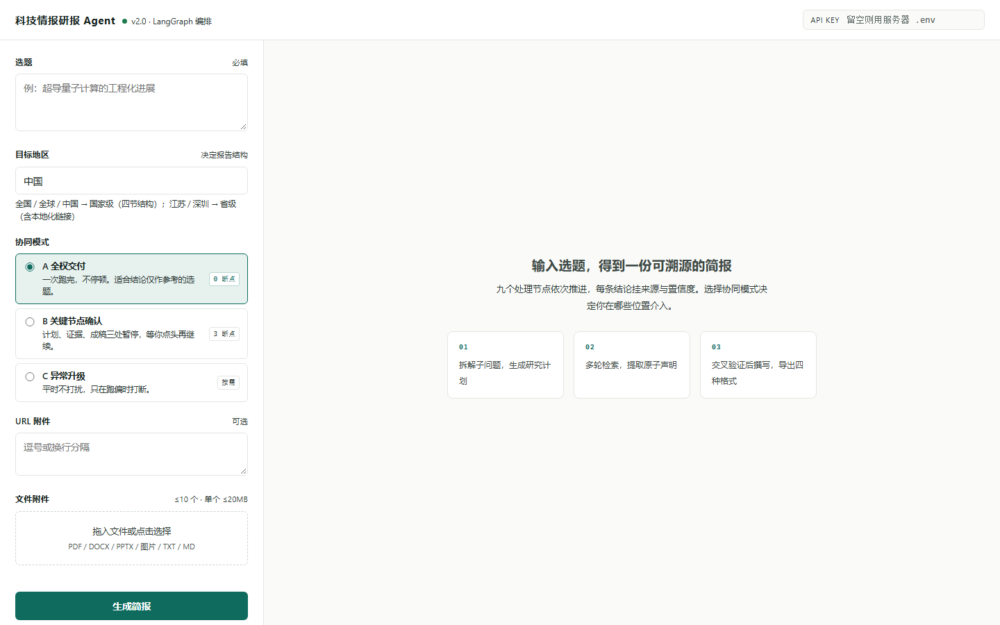
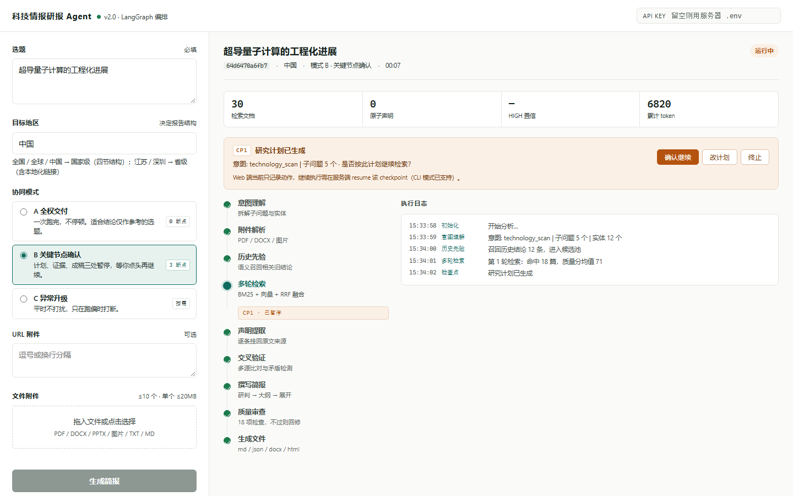
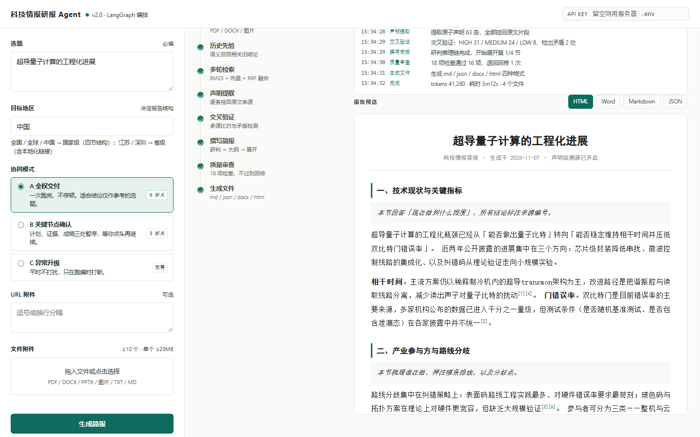

01
智能体产品
研报助手
问一个陌生的技术方向，拿到一份每条结论都能查回原文的简报。

怎么用
说清楚要研究什么，挑一种介入程度：完全放手、在关键处等我确认、或者只在出问题时叫我。跑完拿到一份简报，每条结论后面都标着它来自哪份资料，没查实的另列出来。
三个取舍
1
不让人全程盯着
三种介入程度里，最省事的是放手，最费神的是每步确认。中间那种把「什么时候该叫我」写成明确规则：资料互相矛盾、反复出错时才打断。 为什么多数时候放手是对的，但因为不放心，人往往会一直守着。把判断写成规则，才能把注意力留给真出问题的那几件事。 代价三种做法要分别设计和验证，比只做一种费事。
2
只在还改得起的时候叫人
方向定下来之后、资料核对完之后、成稿之后，各留一次确认。 为什么方向错了，后面全白做；资料错了，后面越写越偏；等成稿再改，就得整篇重写。确认点要赶在这些代价跳变之前。 代价短任务会觉得步骤多，所以才留了「完全放手」。
3
查不到就写「查不到」
每条结论对着资料核一遍，对不上的挑出来；改了几遍仍对不上，就在报告最后单列，而不是抹掉。 为什么反复改写能抹平文字上的问题，抹不掉没查到的部分。交一份看起来完美、实际不知哪里不结实的报告，读的人反而没法用。 代价报告会带着一份不完美的附录，换来的是敢用。
从提问到简报
① 说清要什么
拆问题把一个大题拆成几个能查的小问题
读资料文档、演示稿、图片、网页链接
② 找资料
多来源按小问题分别去查，合并重复结果
留出处每条记下来，注明来自哪一份
③ 核对
对照原文逐条比对，标出互相矛盾的地方
改稿写得不够或不实的地方退回重写
④ 交付
列提纲先定结构，再展开成文
导出网页、文档、纯文本、数据文件
确认 1 方向
确认 2 资料
确认 3 成稿
三种介入程度，决定这三处要不要停下来
| 介入程度 | 什么时候停 | 适合谁 | 代价 |
|---|---|---|---|
| 完全放手 | 一次跑完，中途不停 | 先看看，不对外引用 | 出问题得整篇重来 |
| 关键处等我确认 | 方向、资料、成稿各停一次 | 要拿去写材料，错不起 | 人要守着，慢 |
| 出问题再叫我 | 资料矛盾或反复出错时 | 一次跑好几个方向 | 什么算「出问题」要事先定好 |
做出来的东西
3
种介入程度
按事情的重要程度挑
按事情的重要程度挑
5
类资料能直接读
文档、演示稿、图片、网页等
文档、演示稿、图片、网页等
4
种格式可导出
网页、文档、纯文本、数据文件
网页、文档、纯文本、数据文件

